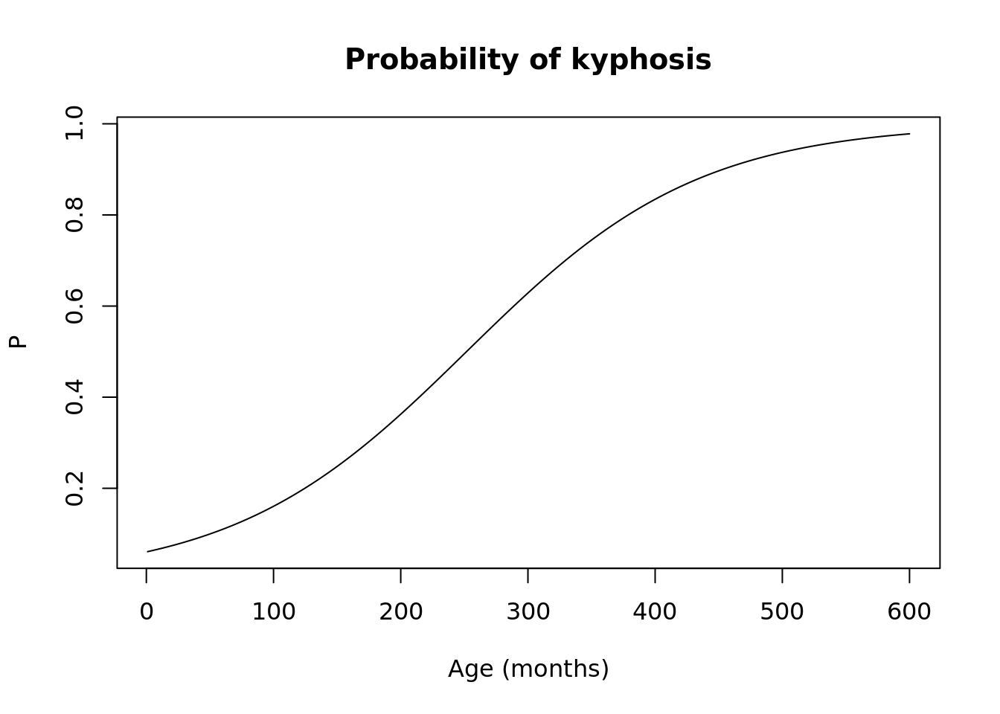
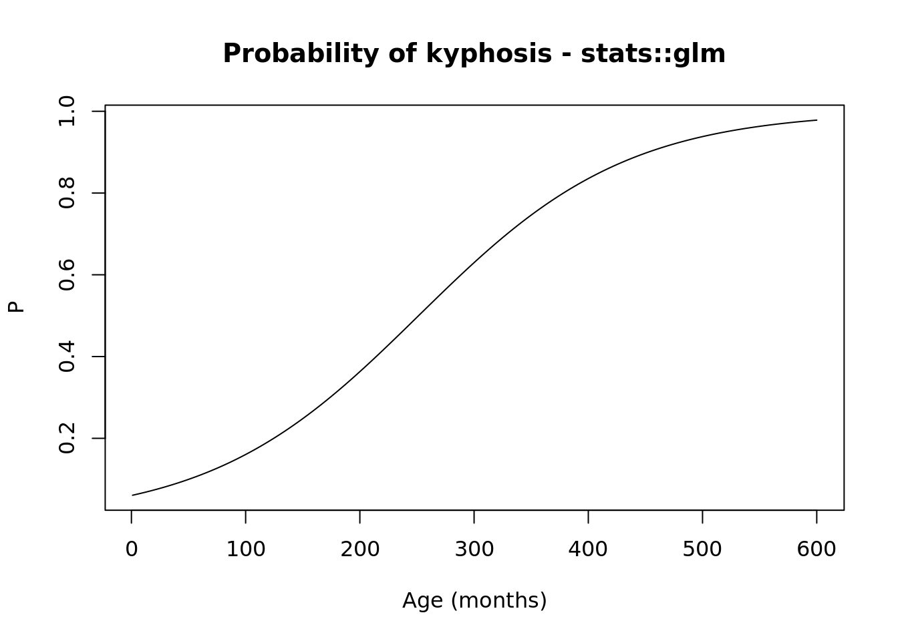
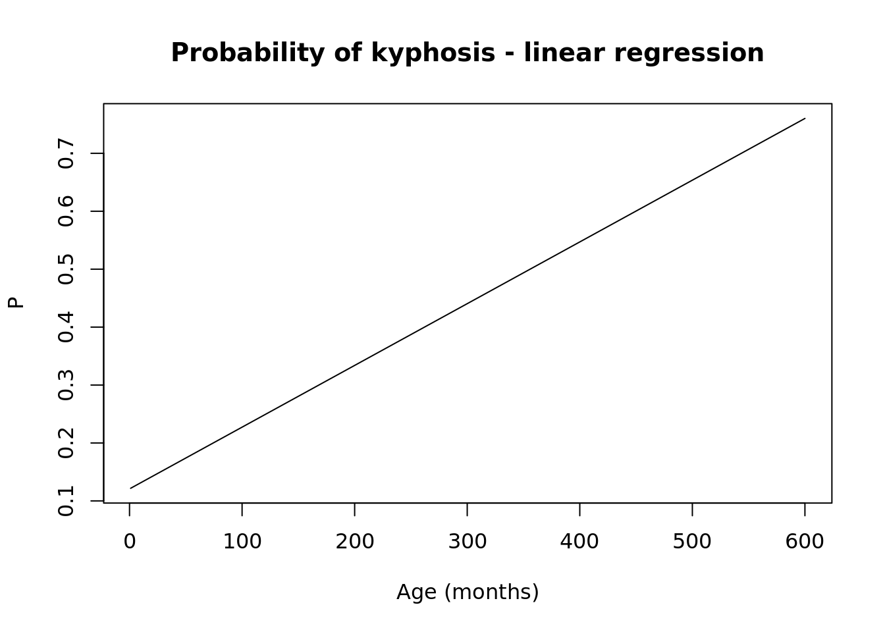

The log likehood function for the canonical exponential family, in terms of \(X\) and \(\beta\), can be written generally as: \[
l_n(\beta; Y, X) = \Sigma_i \frac{Y_i h(X_i^\top \beta) - b(X_i^\top \beta)}{\phi}
\]
In the case of a canonical link function \(h\) is the identity function. \(b\) is the cumulant generating function. Each sub-family of distributions belonging to the exponential family has a unique \(b\).
If \(g\) is the link function, then \(h = (g \circ b')^{-1} = b'^{-1}(g^{-1}(X_i^\top \beta))\).
In this case of the canonical link, we define the link such that \(g = (b')^{-1}\), which indicates that \(g^{-1}\) and \((b')^{-1}\) cancel out.
\(\phi\) is the dispersion paramater, and its value varies across the exponential families.
Example 1 - Bernoulli (logistic regression) on the kyphosis dataset
Model: \(Y|X \sim Bern(\mu(X))\)
We will use the canonical logit link, so \(h\) is identity.
The cumulant generating function is \(b = \log(1 + e^\theta)\).
The logit link function is \(g = \log(\frac{\theta}{1 - \theta})\)
\(\phi\) (the dispersion paramater) is \(1\) for the Bernoulli family.
Thus, we have the simple log-likelihood: \[
l_n(\beta; Y, X) = \Sigma_i (~ Y_i ~ X_i^\top \beta - \log(1 + e^{X_i^\top \beta}) ~)
\]
Maximizing this function with respect to \(\beta\) will give us the parameters that make this model most likely given the data (\(X\) and \(Y\))
DATA:
The kyphosis dataset represents data on children who have had corrective spinal surgery.
Variables:
kyphosis: indicates if kyphosis, a type of deformation, is present after the operation
age: age of patient in months
number: the number of vertebrae involved
start: the number of the first (topmost) verterba operated on
# GLM (logistic regression)# Y|X ~ Bernoulli# canonical logit linkll.bern <-function(x, y) { nx <-ncol(x) x <-as.matrix(x, ncol =if (is.null(nx)) 1else nx) x <-cbind(1, x) # intercept y <-as.matrix(y, ncol =1)function(b) { b <-as.matrix(b, ncol =1) xb <- x %*% bsum(y * xb -log(1+exp(xb))) }}ll <-ll.bern(x = kyphosis[, xvars],y = kyphosis$present)o <-optim(par =rep(0.5, length(xvars) +1), # initial param valuesfn = ll, # fn to optimizecontrol =list(fnscale =-1)) # optim is a minimizer, we need max# final param valuessetNames(o$par, c("Intercept", xvars))
Intercept age number start
-2.03113248 0.01090337 0.40986108 -0.20646639
# compute on "new" data...testage <-data.frame(intercept =1,age =1:600, # reasonable values + somenumber =mean(kyphosis$number), # hold fixedstart =mean(kyphosis$start))# X betaxb <-as.matrix(testage) %*%matrix(o$par, ncol =1)# inverse logity_hat <-exp(xb) / (1+exp(xb))plot(testage$age, y_hat, type ="l",main ="Probability of kyphosis",xlab ="Age (months)", ylab ="P")

# check against stats::glmmod <-glm(present ~ age + number + start,family =binomial(link ="logit"),data = kyphosis)summary(mod)
Call:
glm(formula = present ~ age + number + start, family = binomial(link = "logit"),
data = kyphosis)
Coefficients:
Estimate Std. Error z value Pr(>|z|)
(Intercept) -2.036934 1.449575 -1.405 0.15996
age 0.010930 0.006446 1.696 0.08996 .
number 0.410601 0.224861 1.826 0.06785 .
start -0.206510 0.067699 -3.050 0.00229 **
---
Signif. codes: 0 '***' 0.001 '**' 0.01 '*' 0.05 '.' 0.1 ' ' 1
(Dispersion parameter for binomial family taken to be 1)
Null deviance: 83.234 on 80 degrees of freedom
Residual deviance: 61.380 on 77 degrees of freedom
AIC: 69.38
Number of Fisher Scoring iterations: 5
pred <-predict(mod, newdata = testage)pred <-exp(pred) / (1+exp(pred))plot(testage$age, pred, type ="l",main ="Probability of kyphosis - stats::glm",xlab ="Age (months)", ylab ="P")

# compared with linear regression ("linear probability model")# - note, becomes impossible for the model to be correct for large valueslinmod <-glm(present ~ age + number + start,family =gaussian(link ="identity"),data = kyphosis)linpred <-predict(linmod, newdata = testage)plot(testage$age, linpred, type ="l",main ="Probability of kyphosis - linear regression",xlab ="Age (months)", ylab ="P")

Example 2 - Poisson regression on the seatbelts dataset
Model: \(Y|X \sim Poiss(\mu(X))\)
We will use the canonical log link for the Poisson case.
The cumulant generating function is \(b = e^\theta\).
The log link function is simply \(g = (b')^{-1} = \log(\theta)\).
\(\phi\) (the dispersion paramater) is also \(1\) for the Poisson family.
Thus, we have the simple log-likelihood: \[
l_n(\beta; Y, X) = \Sigma_i (~ Y_i ~ X_i^\top \beta - e^{X_i^\top \beta} ~)
\]
DATA:
The seatbelts dataset contains information collected on monthly totals of car accidents in Great Britain from 1969 to 1984.